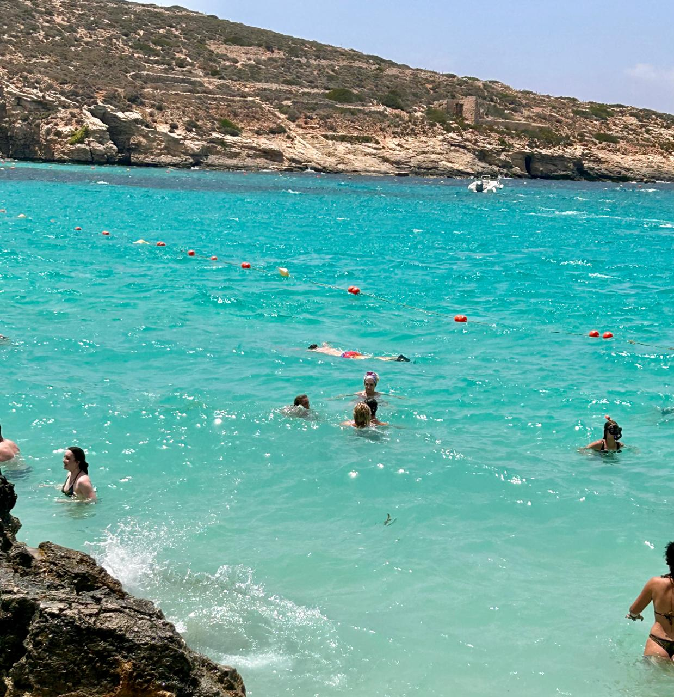

Comino Island Paradise
Tucked away on the small, car-free island of Comino, the Blue Lagoon is a world-famous sanctuary famous for its pristine turquoise waters and golden limestone cliffs.
The Blue Lagoon Experience
Click play to watch the video with sound! This local clip captures the cinematic purity, yacht sailing lanes, and tranquil ocean waves that define Malta's most breathtaking swimming gem.
Exploring Comino Island

Hidden Coastal Caves
Rent kayak gear or take boat excursions to explore deep natural arches and secret crystalline swimming coves nearby.

Travel & Ferry Information
Daily standard shuttle boats depart from Marfa or Cirkewwa harbors. We recommend early morning visits to avoid standard tour crowding.